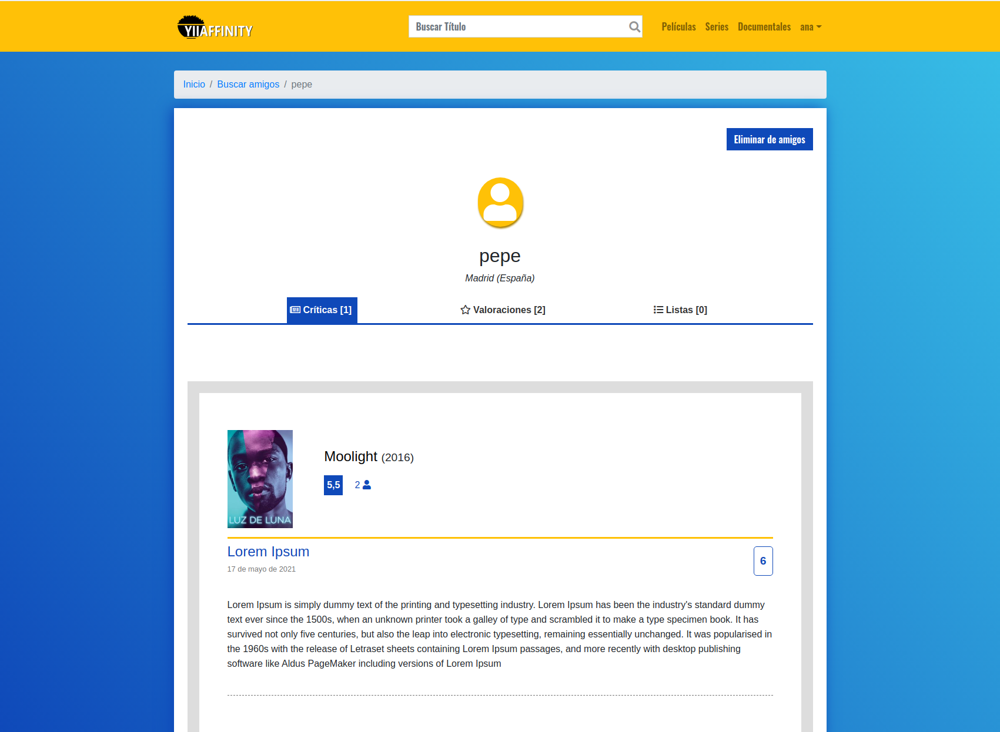

Manual de usuario ¶
Al entrar en la aplicación podrá verse esta pantalla inicial
El usuario invitado tiene opciones de ver y consultar los títulos, puede filtra la busqueda por tipos dirigiendose a la seccion del tipo de producto que quiere.
El invitado puede ver las fichas o las críticas de ese producto pero no puede interactuar con ella.
Si el invitado desea votar, añadir a listas o hacer una crítica de ese producto deberá loguearse (para ello deberá estar registrado previamente).
Una vez logueado el usuario ya puede votar, criticar el producto o añadir a listas (Si el producto ya está en una lista, la lista no aparecerá).
Al hacer clic en Añadir crítica irá a la seccion Hacer crítica donde podrá criticar el producto.

Una vez hecha la crítica se verá el perfil del usuario donde se podrá acceder a sus valoraciones, sus críticas o sus listas que la realizo en la parte superior y algunos datos de el prdocucto como su valoracion media y la cantidad de criticas que tiene. El usuario puede modificar o borrar la crítica que hizo.

Si hace clic en el título o en las migas de pan del título de producto volvera a la ficha donde podrá ver su crítica añadida y como el contador de críticas de arriba se ha incrementado.
Al acceder a críticas se puede ver todas las críticas de ese producto.
El usuario tiene acceso a todo momento a un submenu con el registro de lo que ha ido añadiendo.
- Perfil El perfil personal del usuario (Donde principalmente verá sus valoraciones).
- Mis listas Donde se almacenan las listas que selecciono.
- Amigos Donde estan los usuario que ha decidido seguir.
Perfil se verá las ultimas valoraciones que hizo el usuario. El usuario podrá editar sus datos de registro con Editar datos o eliminar su propia cuenta con Eliminar cuenta

En MIs listas el usuario puede ver los productos que guarda en esa lista posicionados ordenadamente, puedeconsultar sus listas eliminarlas con el '-' o buscar nuevas listas.

Al entrar anteriormente en Buscar listas pasamos a una sección donde están todas las listas de la app. El usuario puede añadir a sus listas con '
+' o quitarlas con el '-'.Si seleccionamos un título de mis listas podemos ver el contenido de esta. Aquí el usuario puede cambiar su posición usando las flechas o eliminar un prducto de la lista con la '
x'
En Amigos El usuario puede ver a los demas usuarios que sigue, buscar nuevos usuarios que seguir con Buscar amigos, filtra la busqueda por alias o nombre o entrar a ver su perfil.
Al seleccionar un amigo verá el Perfil de ese amigo y sus valoraciones.
- Dejar de segurilo Eliminar amigo
- Ver críticas que hizo

- Ver las listas que tiene y su contenido

En buscar amigosestán todos los usuarios de la aplicación entrando al perfil del amigo el usuario puede añadirlo a su lista de seguimiento